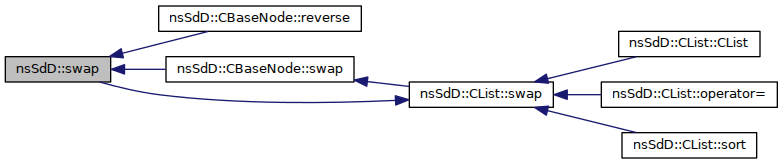

Namespace holding data-structures. More...
Classes | |
| class | CBaseNode |
| Doubly-linked node in a circular list. More... | |
| class | CList |
| class | CNode |
| Doubly linked node that can hold a value. More... | |
Functions | |
| template<class T > | |
| void | swap (CList< T > &x, CList< T > &y) |
| Swaps the content of two lists. More... | |
Detailed Description
Namespace holding data-structures.
Function Documentation
template<class T >
| void nsSdD::swap | ( | CList< T > & | x, |
| CList< T > & | y | ||
| ) |
Swaps the content of two lists.
- Complexity
- Constant.
- Iterator Validity
- All iterator remain valid, but instead refers to elements in the other list
- Data races
- Both container are accessed, none of the contained elements are.
- Parameters
-
x A list to swap y A list to swap
Definition at line 718 of file CList.hpp.
References nsSdD::CList< T >::swap().
Referenced by nsSdD::CBaseNode::reverse(), and nsSdD::CBaseNode::swap().
Here is the call graph for this function:
Here is the caller graph for this function:
